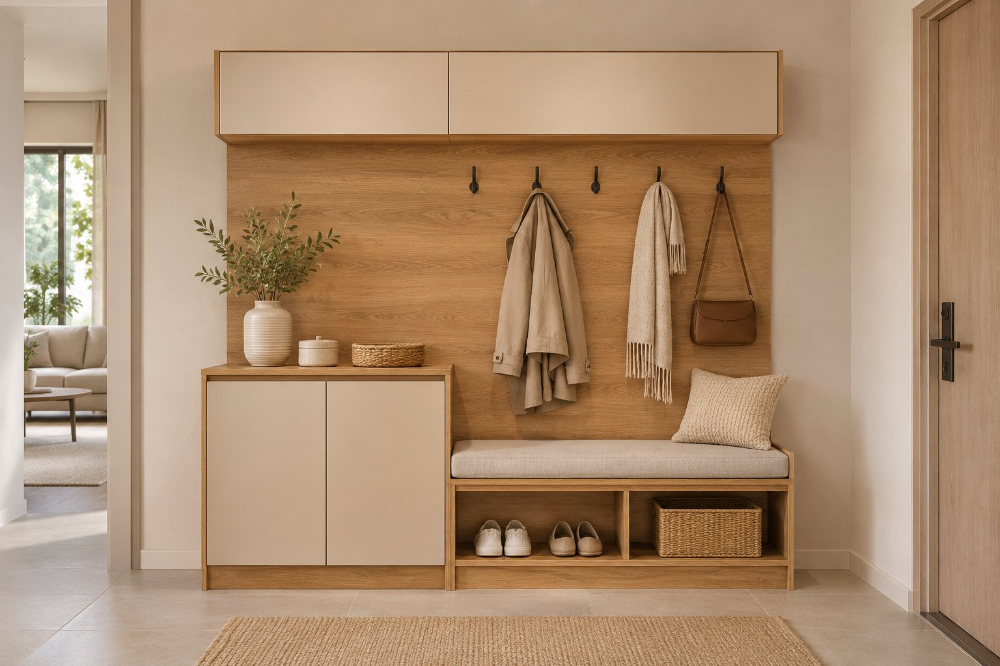

Система для прихожей «Практик»
Тумба для обуви и место для переобувания

Низкая тумба помогает убрать обувь с прохода. Скамью и открытую панель с крючками можно расположить рядом, чтобы взять вещи перед выходом. Глубину и ширину композиции определяют по коридору и расположению дверей.
Характеристики
- Конфигурация
- Тумба для обуви и место для переобувания
- Размещение
- Входная зона или узкая прихожая
- Секции
- Тумба, скамья и открытые крючки
- Наполнение
- Обувные отделения и закрытое место для мелочей
Возможные материалы
- Корпус из ЛДСП
- Панель с фактурой дуба
- Матовые фасады и металлические крючки
Преимущества
- Обувь, повседневные вещи и место для переобувания рядом
- Глубина подбирается под проход